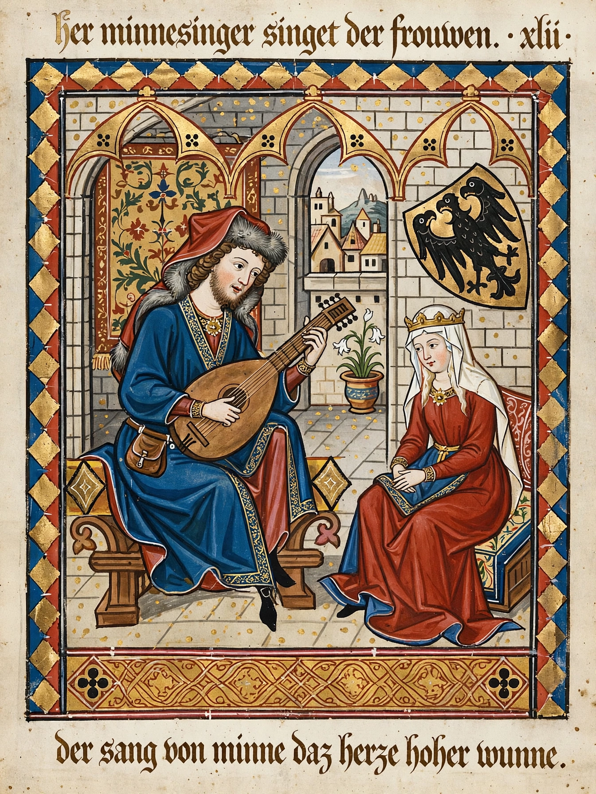

Minnesang (German: "love song") was a tradition of lyric and song writing in Germany and Austria flourishing from the 12th to the 14th century, sung by noble composer-performers called Minnesänger. Modelled on the Provençal troubadours and French trouvères, it centred on courtly love (Minne) and is a principal monument of Middle High German literature.

| Period | c. 1150–1350 |
|---|---|
| Language | Middle High German |
| Major source | Codex Manesse |
The typical Minnelied praises an unattainable, often married lady whom the knight serves without reward (hohe Minne); later poets explored fulfilled or lower love and dawn songs (Tagelied) of lovers parting at daybreak. Common forms include the strophic song, the long-form Leich, crusading songs (Kreuzlieder) and didactic Spruch poetry.
Early figures include Dietmar von Aist and the Kürenberger; the classical period is dominated by Hartmann von Aue, Wolfram von Eschenbach, Reinmar der Alte and above all Walther von der Vogelweide, whose political and love lyrics are the tradition's summit. Later masters such as Neidhart added peasant settings and parody.
Some 2,000 songs survive, the grandest collection being the early-14th-century Codex Manesse in Heidelberg, with illuminated portraits of 137 poets; melodies survive for only a fraction. The tradition fed into Meistersang and German lyric poetry and was romanticised by 19th-century German nationalism.